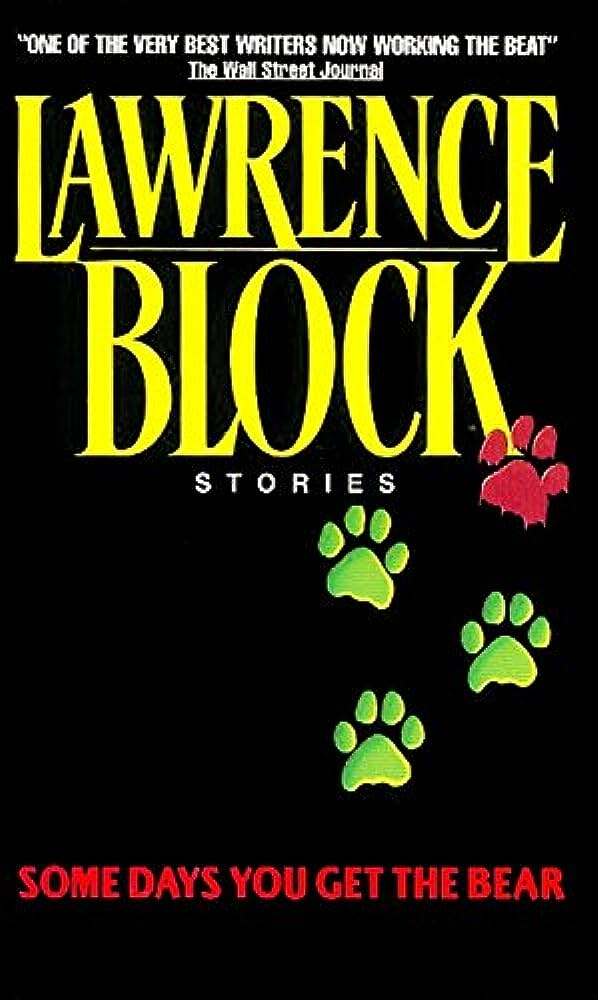
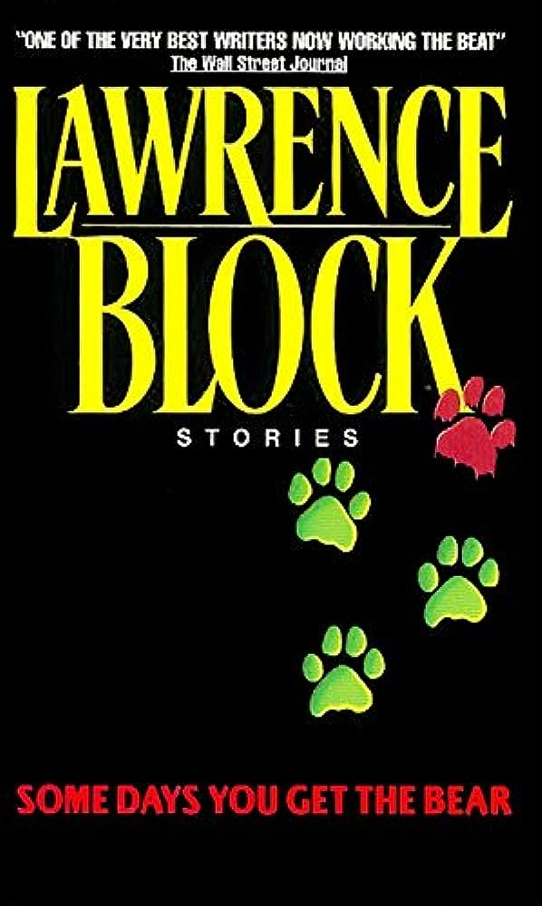

How to Find Evidence ?
Interview witnesses to obtain firsthand accounts and collaborate with experts like forensic analysts. Utilize technology like UV lights, metal detectors, and chemical tests to uncover hidden evidence. Check for surveillance footage and communication records that might provide insights. Ensure a proper chain of custody by carefully documenting and storing evidence. Preserve trace evidence like hair, fibers, and fingerprints, which could link individuals to the scene.

 
